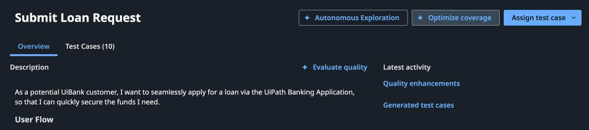
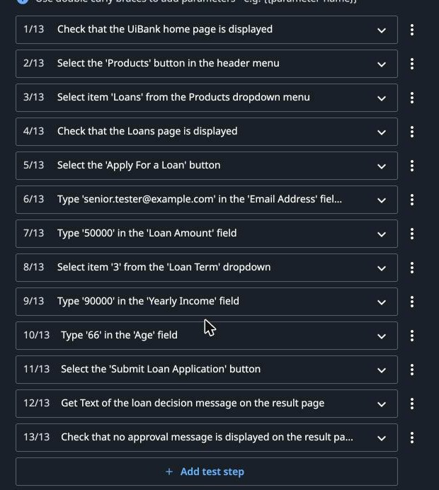

3. Generate Test Cases¶
Why it matters for you: writing manual test cases by hand takes days. Here Autopilot drafts them from your requirement in minutes, each one traceable to a business rule – and you stay the one who decides what's good enough.
Generate tests, an Autopilot button in Test Manager, reads a requirement and proposes test cases with manual steps. It works from the requirement you improved in 2. Evaluate the Requirement. You review every proposal before it's saved. The project already has 6 test cases on this requirement; today you add at least 3 more – including the one that decides the release.
Generate test cases with Autopilot¶
- Open Requirements → Submit Loan Request.
- Select + Optimize coverage, then Generate tests. (Assign test case → Generate test cases opens the same panel.)
-
In Provide additional context → Add documents, select:
✅ UiBank Security Guidelines.pdf – input validation rules for the form fields
✅ UiBank Accessibility Guidelines.docx – form labels, error messages and keyboard access
Add documents or Leverage RAG?
Add documents Leverage RAG What Autopilot reads The documents you select, in full Only the relevant passages from a search index your admin set up (Context Grounding) Best for Requirements whose rules live in a few known documents Requirements with terms or abbreviations whose meaning is spread across many sources In this workshop, use Add documents. RAG (retrieval-augmented generation) means Autopilot first looks up the relevant passages, then writes.
-
On the next screen:
-
Select a prompt: choose Valid E2E Scenario Testing.
Editing prompts and adding your own
✅ For this run only – edit the prompt right here.
✅ For the whole project – create new prompts or edit existing ones in the Prompt Library, under Project Settings.
-
At the end of the prompt text, on a new line, add these instructions:
Generate 5 test cases. Give every step one action and an expected result, and add preconditions and postconditions. Name every UI element exactly as it is labelled in UiBank. Start steps with Select, Type, Get Text, Check or Select item. Include 1 test case for an applicant aged 66, with a loan amount of 50000, a term of 3 years and a yearly income of 90000, that expects the loan to be rejected, and name it Submit Over-65 Request.Why "Select, Type, Get Text…"? Steps written as one clear action each are easier for everyone who runs them later today: you, Delegate and a robot.
-
Keep the default model.
- Select Generate tests. Autopilot takes about a minute. You can close the panel while it works.
-
-
Under Latest activity, select Generated test cases to see the proposals.

See Generate tests for requirement.
Review and keep the best¶
Autopilot drafts; you approve. Treat each proposal like a test case from a new team member.
-
Expand each proposal and keep it only if it:
✅ traces to one acceptance criterion of Submit Loan Request
✅ has one action per step, each with an expected result
✅ uses realistic data (an email, an amount, a term, an income, an age)
✅ expects what the requirement says – not what you guess UiBank does
Otherwise sharpen the instructions and generate again.
Check approvals over $100,000
The requirement says loans over $100,000 are approved when the income is more than 3x the amount – but UiBank never approves a loan over $100,000. A proposal that expects such an approval would fail as a second UiBank defect. That's a real finding, but not today's story: leave it out.
-
Tick at least 3 proposals, including the over-65 one. When you tick the first box, a line N selected / Deselect all appears above the list and pushes it down. Check that your ticks are on the right rows, then select Create tests. With more proposals, the list can span more than one page.
The message Test cases created and linked to the requirement. confirms it.
In production, a second reviewer can sign off generated test cases with Testing Process Governance – you'll see it as an option in step 9.
-
Open the requirement's Test Cases tab. Your new test cases are listed there: Autopilot links them to Submit Loan Request for you.
Name your over-65 test case¶
One of your new test cases submits a loan request for an applicant over 65 – for example age 66 – and expects it to be rejected. It's the test case that decides the release, and steps 4, 6, 7 and 9 look for it by name.
- Find it on the requirement's Test Cases tab.
- Check its name. If it isn't exactly Submit Over-65 Request, open the test case and rename it to
Submit Over-65 Request. - Open its manual steps. The age step uses an age over 65 (66–70), and the last expected result is a rejection – not "Congrats! You've been approved…".
- Check that it uses amount 50000, term 3 and income 90000 – the same data as the trainer's automated test. With an amount over $100,000, UiBank rejects the loan for the amount, and you won't see the age defect. Edit the steps if needed.

No over-65 test case?
Generate again with only this instruction, or create it yourself: Test Cases → create a test case named Submit Over-65 Request, link it to Submit Loan Request, and add the steps of a loan application with amount 50000, term 3, income 90000 and age 66 that expects a rejection. Ask your trainer if you're stuck – you need this test case for the rest of the day.
Check it
✅ At least 3 new test cases are linked to Submit Loan Request (its Test Cases tab shows 9 or more).
✅ One of them is named Submit Over-65 Request, uses an age over 65, and expects a rejection.
✅ Each new test case has manual steps with an expected result.
Bring your own sources (optional)¶
Your team rarely starts from a blank page. Try one of these if you finish early.
Bring your Excel UAT scripts (about 10 minutes)
Many teams keep UAT scripts in spreadsheets. Autopilot can turn them into manual test cases.
- Download UiBank Regression Tests.xlsx. It's also in your project, under Dashboard → Attachments.
- Go to Test Cases → Import Test Cases ▾ → Start new import.
- Under Provide import document, select Add a file, pick the
.xlsx, then Next. - Under Provide import instructions, type
Import all the manual test cases., keep the recommended Model, and select Preview import. - Autopilot says "Generating import preview, hold on" and that you can close the panel. It takes about 5 minutes – carry on with something else.
- Go back to Import Test Cases ▾ → Refine last import. When it's ready, you see Review import candidates.
-
Tick the candidates you want – the spreadsheet holds an over-65 script (age 66, expects a rejection) – and select Create tests.
Rows with the same test case name in one sheet are dropped without a warning – give each script a unique name.
The message "Test cases created." confirms it. Imported test cases aren't linked to a requirement: link the ones you keep from Submit Loan Request → Assign test case.
From a business document, with Delegate (about 10 minutes)
The business has documented a new process, Loan lookup, in a Process Design Document (PDD). It isn't in your requirements yet. Delegate, the desktop agent you connected in Prerequisites, can turn it into a requirement and a test case. On a Mac, Delegate for macOS (Preview) runs the same prompt.
- Download the PDD, Loan lookup process to be tested.docx.
-
Attach it in Delegate. Replace
<PROJECT_PREFIX>with your project prefix from step 1 (for exampleUIBAS), then paste:Analyze the attached PDD and create + save a requirement and a manual test case in my Test Manager project <PROJECT_PREFIX>. Requirement: Create one new requirement for the process described in the PDD (don't create it if an existing requirement already covers this exact process – check first and tell me if you find one instead of creating a duplicate). Name it Loan Lookup. Its description should summarize the user flow (pages/actions) and any acceptance criteria from the PDD. Test case: Create one manual test case - infer name from the PDD, derived from the PDD's numbered steps/screenshots – one test step per documented UI action, each with an expected result. Don't use the loan ID shown in the PDD: the step that enters the loan ID should use a loan ID from a loan applied for today. Final step: After the PDD's last action, add a step that verifies the loan details page shows the same loan ID that was entered, along with the rest of the loan's details. Link: Link the new test case to the new requirement. Report back: give me the created requirement key and test case key when done. -
Approve Delegate's actions when it asks. It reports the new requirement key and test case key.
Check it
A new Loan Lookup requirement in your project, with a linked test case that has manual steps.
Not quite right? Talk to Delegate. Open the new requirement and test case in Test Manager. Check the title, description, acceptance criteria, steps and expected results. Then tell Delegate what to fix, in your own words, as you'd tell a colleague. For example:
✅ "The test case must check that the loan ID is the same, and that the loan's other details are displayed"
✅ "Don't use the data from the PDD in the test case"
✅ "Add the label 'Delegate' to this test case and requirement"
Want to run it too? Paste:
Apply for a loan in UiBank at https://uibank.uipath.com, note the new loan ID it shows, then run the new Loan Lookup test case with that loan ID.
UiBank's button for Loan Lookup is Already Have A Loan?. The loan details page always shows a sample email address – that's not a defect. UiBank may drop old loans, so apply for a new one if you rerun on another day.
Nice work!¶
You've gone from a requirement to reviewed, traceable test cases in minutes – and Submit Over-65 Request is ready for its first run.
Next → 4. Run the Test Three Ways